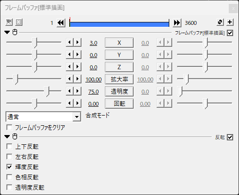
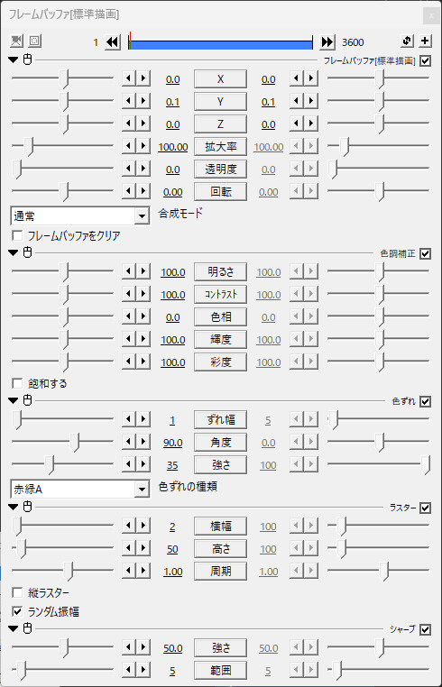
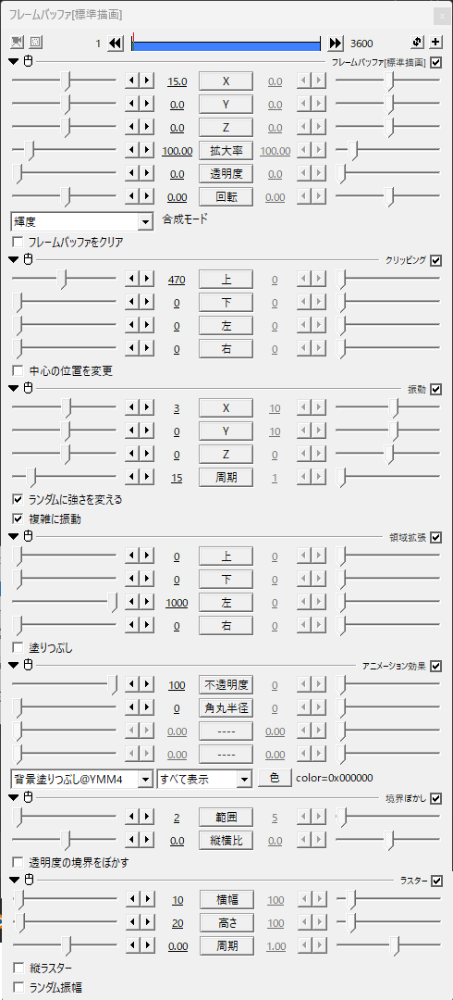
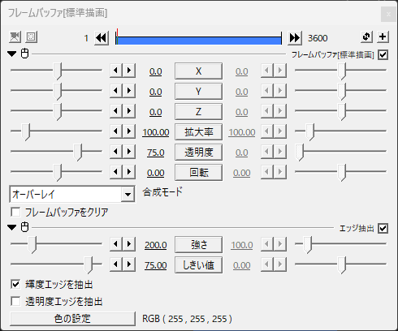
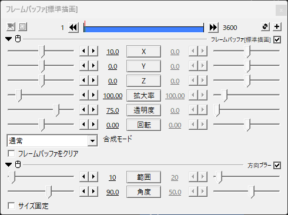
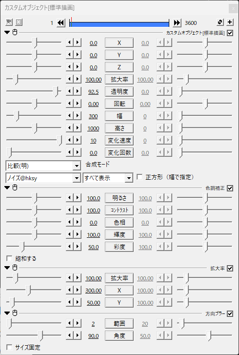
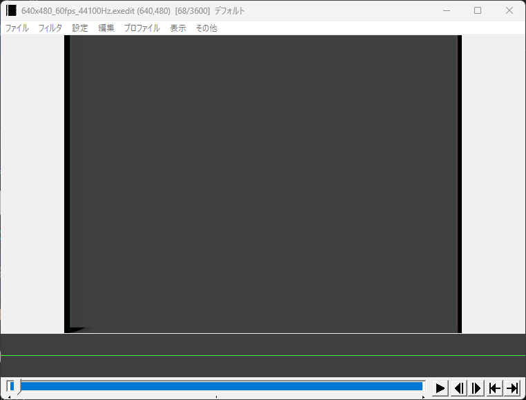
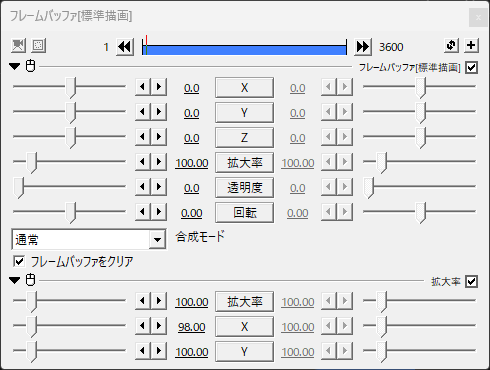
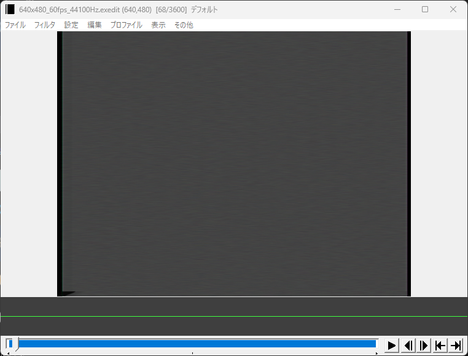

AviutlでVHSを再現できるexoファイル形式のエフェクトです
編集するときはエフェクトのどれかを非表示にするか画質を下げて編集することをおすすめします
アニメーション効果の"YMM4"の"背景塗りつぶし"が必要です =YMM4が必要(多分)
(なくても使えなくはない)
白水氏の"ノイズ"が必要です
(なくても使えなくはない)
1.ダウンロードしたexoファイルをaviutlのタイムラインにぶち込む
2.VHS風にしたい素材とかをぶち込む
3.素材、映像の長さをご自由に調整
4.できた！
VHS独特な色合いとか輪郭とかを表現してくれるやつ
X座標をちょっとずらすことで独特な輪郭を表現してる
透明度を上げるほどコントラストが上がる 逆に透明度を下げるほど輝度が反転する
そのまんま
主にVHSの基礎(?)の部分
y座標をランダム移動させて振動させてる
そのまんま 一番上のフレームバッファがコントラスト下げてくれてるからなんも設定変えてない
そのまんま 本物のVHSの映像が思ってたより色ずれしてなかったのでver.1より少し弱めた
そのまんま 状態が悪い感じにしたかったら横幅増やすとそれっぽくなる
そのまんま 透明度を上げるほどコントラストが上がる 逆に透明度を下げるほど輝度が反転する
画面の下の方にある少し映像がずれてるやつ
x座標を少しずらしてる
画面の下にだけ表示するようにしてる
そのまんま。
左の黒い謎の空間を作るためのやつ
左の黒い謎の空間を作るためのやつ。こいつがないと下の方にある少し映像がずれてるやつはうまくいかなくなる
何のためにつけたか忘れた()
映像を斜めにするためのやつ
VHS特有の縁が浮かび上がって見えるやつ(語彙力)
正直これなくてもいいかもしれない
透明度を下げてることによって浮かびすぎないようにしてる
白色のエッジ抽出を使うことによって再現している。ver.1よりしきい値を上げた
VHS特有の字幕とかの右側に見える残像みたいなやつ(語彙力)
x座標を少しずらしてることによって方向ブラーが左側にも出ないようにしてる。透明度を下げてることによって浮かびすぎないようにしてる
方向ブラーを使うことによって再現している。範囲上げると残像(?)が見えにくくなるけど左側にも残像が出てきやがる(x座標を変えることで対処はできる)
そのまんま
透明度をかなり上げて違和感のないノイズ(?)を実現している
"高さ"がかなりあるのは"拡大率"の部分で縦に押しつぶしているから
このエフェクト、元々はカラフルなタイプのノイズなんだけどそれだとデジタル感が出てしまうので彩度を下げている
さっき言った通り縦に押しつぶす用。ついでに横にも引き延ばしてさらに違和感のないノイズ(?)を実現している
ぼかし的な役割で入れてる
ノイズがある時とない時の違い
画面の両端の黒い部分
これも本物のVHSの映像がこんな感じだったからver.2で追加した(多分デジタルに変換すると生まれる空間で、ブラウン管で見た時はこの空間は映らない)
"フレームバッファをクリア"にチェックを入れないと黒い部分ができない
横にほんの少しだけ押しつぶすことでそれっぽくしてる
これがある時とない時の違い
